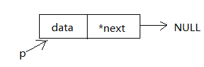
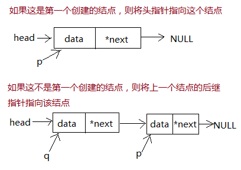

一、链表中结点的存储
链表的结点左边一部分是存放的数据，右边一部分是后继指针指向下一个结点的地址。C语言中通常定义一个结构体类型来存储一个结点，如下：
struct node
{
int data;
struce node *next; //下一个结点的类型也是struct node，所以后继指针的类型也必须是struct node *
};二、让我们把结点连起来吧
想要把结点一个个串起来，还需要三个struct node *类型的指针：head（头指针，指向链表的开始，方便从头遍历整个链表）、p（临时指针，指向那些还未连接的结点）、q（当前指针，指向当前最新串入的结点）。
当链表还没有建立时，头指针head为空。
struct node *head;
head=NULL; //头指针初始为空
现在我们来创建第一个结点，并用临时指针p指向这个结点。

struct node *p;
p=(struct node *)malloc(sizeof(struct node)); //为新结点动态申请一个空间，并用临时结点p指向这个新地址
scanf("%d",&a); //读取数据
p->data=a; //将数据存储到当前结点的data域中
p->next=NULL; //设置当前结点的后继指针指向空，也就是当前结点的下一个结点为空把新加入的结点串进链表。如果该结点是创建的第一个结点，则将头指针指向这个结点再将当前指针指向这个结点；如果该结点不是第一个，则将上一个结点的后继指针指向该结点再修改当前指针指向这个新结点。

if(head==NULL)
head=p;
else
q->next=p;
q=p; //最后指针q也指向当前结点
三、建立链表并遍历输出的完整代码
#include <stdio.h>
#include <stdlib.h>
struct node
{
int data;
struct node *next;
};
int main()
{
struct node *head,*p,*q,*t;
int i,n,a;
scanf("%d",&n);
head=NULL;
for(i=0;i<n;i++){
p=(struct node *)malloc(sizeof(struct node));
scanf("%d",&a);
p->data=a;
p->next=NULL;
if(head==NULL)
head=p;
else
q->next=p;
q=p;
}
//输出链表
t=head;
while(t!=NULL){
printf("%d ",t->data);
t=t->next;
}
return 0;
}